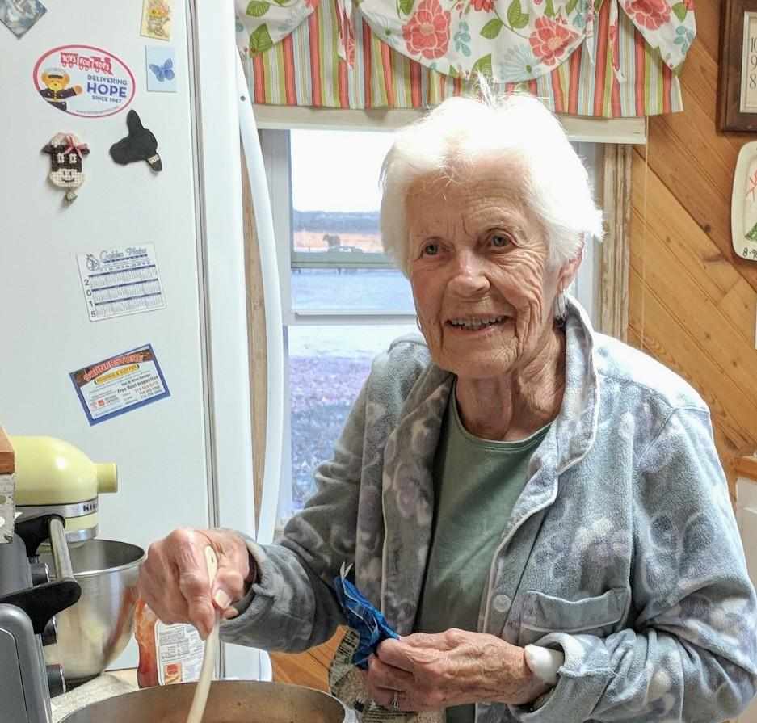

Charlene Nielsen's Kitchen
Sharing a taste of home.
This website is my attempt to recreate the recipe box from my grandmother's kitchen in a way that is easy
to share with my family and friends. I had a very close relationship with my grandma, and many of my strongest
memories of her revolve around food and spending time with her in her kitchen. The idea of scanning
all of her recipe cards and distributing digital copies among the family had been floating around in my head for years,
but after I moved away from home, I found myself in her kitchen less and less often, and opportunites passed me by.
When I first had the idea, I didn't intend this project to be in memory of my grandmother, but as time slipped
away from me, that's how it ended up. Now I'm making it happen, and I hope exploring these cards and recreating these
recipes in your own kitchens brings happy memories of Charlene, Al, and the family farm to all of us who might
spend less time there than we'd like.
-Christian Nielsen